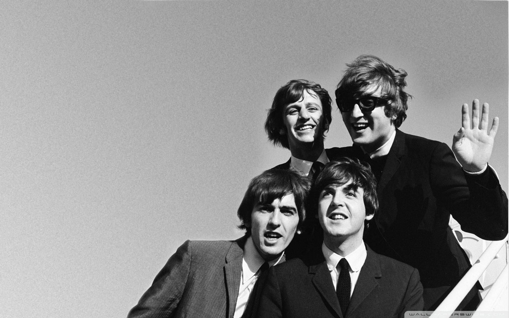
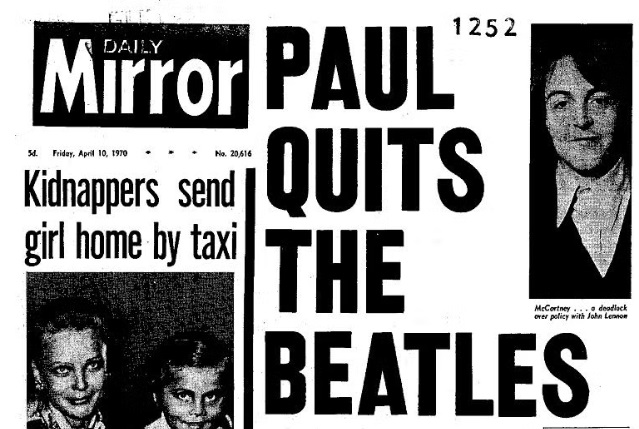

Bienvenidos al Sitio Web oficial de la Beatlemania
Aqui encontraran informacion, curiosidades y todo lo que no sabias sobre The Beatles, la banda de rock más grande de todos los tiempos.

Empecemos con un poco de historia...
The Beatles, conocida en el mundo hispano como Los Beatles, fue una banda de rock británica formada en
Liverpool en 1960.
La agrupación original estaba compuesta por John Lennon, Paul McCartney, George Harrison y Ringo Starr.
Son ampliamente considerados como la banda más influyente de la música popular y fueron fundamentales para
el desarrollo de la contracultura de los años 60
y el reconocimiento de la música popular como una forma de arte.
Influencias
Los Beatles fueron influenciados por una amplia variedad de géneros musicales, incluyendo el rock and roll,
el pop, el folk, el blues y la música clásica.
También se inspiraron en artistas como Elvis Presley, Chuck Berry, Buddy Holly y Little Richard.
Durante su co-residencia con Little Richard en el Star Club de Hamburgo en abril de 1962, Richard les enseñó
técnicas para mejorar sus canciones.
Además, la música de los Beatles también fue influenciada por la cultura y la sociedad de la época,
incluyendo el movimiento de derechos civiles, la guerra de Vietnam y la revolución sexual.
The Beatles continuaron recibiendo influencias a lo largo de su carrera musical, sobre todo de artistas
contemporáneos, incluyendo a Bob Dylan, Frank Zappa, The Byrds y The Beach Boys,
cuyo álbum de 1966, Pet Sounds, dejó sorprendido e inspirado a McCartney. Martin declaró: «Sin Pet Sounds,
el Sgt. Pepper no habría ocurrido [...] Sgt. Pepper fue un intento de igualar el nivel de Pet Sounds».
A lo largo de su carrera, los Beatles experimentaron con diferentes estilos musicales y técnicas de
grabación, lo que les permitió evolucionar constantemente su sonido.

1956-1963: formación
En noviembre de 1956, John Lennon, de dieciséis años, formó un grupo de skiffle con varios amigos de la
escuela secundaria Quarry Bank en Liverpool.
Se llamaban The Quarrymen, en referencia a la canción de su escuela: «Los hombres de la cantera eran viejos
antes de nuestro nacimiento».
Paul McCartney, de quince años, conoció a Lennon el 6 de julio de 1957 y se unió como guitarrista rítmico
poco después.
En febrero de 1958, McCartney invitó a su amigo George Harrison, que entonces tenía
quince años, a ver a la banda.
Harrison audicionó para Lennon, impresionándolo con su forma de tocar, pero Lennon inicialmente pensó que
Harrison era demasiado joven.
Después de un mes de insistencia, durante un segundo encuentro —organizado por McCartney—, Harrison
interpretó la parte de guitarra principal de la canción instrumental «Raunchy» en la planta superior de un
autobús de Liverpool, y lo contrataron como guitarrista líder.
En enero de 1959, los amigos de Lennon de Quarry Bank abandonaron el grupo y él comenzó sus estudios en el
Liverpool College of Art.
Los tres guitarristas, que se hacen llamar Johnny and the Moondogs, tocaban rock and roll siempre que podían
encontrar un baterista.
También actuaron como The Rainbows. Paul McCartney le contó más tarde a New Musical Express que se llamaban
así «porque todos teníamos camisas de diferentes colores y no podíamos permitirnos comprar otras».
Stuart Sutcliffe, amigo de Lennon de la escuela de arte, que acababa de vender uno de sus cuadros y fue
persuadido para comprar un bajo con el dinero, se unió al grupo en enero de 1960. Sugirió cambiar el nombre
de la banda a Beatals, como homenaje a Buddy Holly y a The Crickets.
Utilizaron este nombre hasta mayo, cuando se convirtieron en los Silver Beetles, antes de emprender una
breve gira por Escocia como grupo de acompañamiento del cantante pop y también oriundo de Liverpool, Johnny
Gentle.
A principios de julio, se reinventaron como los Silver Beatles y a mediados de agosto simplemente como The
Beatles.
Primeras grabaciones con EMI
En junio de 1962, el grupo firmó un contrato de grabación con EMI.
El productor George Martin, que había escuchado a los Beatles en una audición para Decca Records, se mostró
impresionado por su talento y les ofreció un contrato.
Sin embargo, el baterista Pete Best no cumplía con las expectativas de Martin, y fue reemplazado por Ringo
Starr en agosto de 1962.
El primer sencillo de los Beatles, «Love Me Do», fue lanzado en octubre de 1962 y alcanzó el número 17 en
las listas del Reino Unido.
Su segundo sencillo, «Please Please Me», lanzado en enero de 1963, alcanzó el número 2 en las listas del
Reino Unido y se convirtió en su primer éxito importante.
El álbum debut de los Beatles, también titulado Please Please Me, fue lanzado en marzo de 1963 y alcanzó el
número 1 en las listas del Reino Unido, donde permaneció durante 30 semanas consecutivas.
El éxito de los Beatles continuó creciendo con una serie de sencillos exitosos y álbumes que siguieron a lo
largo de la década de 1960.
1963-1966: Beatlemanía y años de gira
En 1963, los Beatles se convirtieron en un fenómeno de masas en el Reino Unido, con una base de fans cada
vez mayor y una serie de éxitos en las listas.
En noviembre de 1963, su sencillo «She Loves You» alcanzó el número 1 en las listas del Reino Unido y se
convirtió en el sencillo más vendido de la historia del Reino Unido en ese momento.
En febrero de 1964, los Beatles hicieron su primera aparición en la televisión estadounidense en The Ed
Sullivan Show, lo que marcó el comienzo de su éxito masivo en los Estados Unidos.
Su sencillo «I Want to Hold Your Hand» alcanzó el número 1 en las listas estadounidenses y se convirtió en
su primer éxito importante en ese país.
A lo largo de 1964 y 1965, los Beatles continuaron lanzando una serie de éxitos y álbumes exitosos,
incluyendo A Hard Day's Night, Help! y Rubber Soul.
Durante este período, también realizaron varias giras por todo el mundo, incluyendo una gira por los Estados
Unidos en 1965 que fue seguida por millones de fans.
Sin embargo, a medida que su fama crecía, también lo hacía la presión y la atención mediática, lo que llevó
a los Beatles a tomar un descanso de las giras después de su última gira mundial en 1966.
A Hard Day's Night
En 1964, los Beatles protagonizaron su primera película, A Hard Day's Night, dirigida por Richard Lester.
La película fue un gran éxito tanto crítica como comercialmente, y se convirtió en un clásico del cine
musical.
La banda también lanzó un álbum con el mismo título que incluía canciones de la película, como «A Hard Day's
Night», «Can't Buy Me Love» y «And I Love Her».
La película y el álbum ayudaron a consolidar la imagen de los Beatles como una banda de rock innovadora y
carismática, y contribuyeron a su creciente popularidad en todo el mundo.
La madurez: Help! y Rubber Soul
En 1965, los Beatles lanzaron su segunda película, Help!, también dirigida por Richard Lester.
La película fue un éxito comercial, aunque recibió críticas mixtas.
El álbum de la película, también titulado Help!, incluyó canciones como «Help!», «Ticket to Ride» y
«Yesterday», que se convirtieron en algunos de los mayores éxitos de la banda.
En diciembre de 1965, los Beatles lanzaron su sexto álbum de estudio, Rubber Soul, que marcó un cambio
significativo en su estilo musical.
El álbum fue aclamado por la crítica y se considera uno de los mejores álbumes de todos los tiempos.
Rubber Soul mostró una mayor madurez musical y lírica, con canciones como «Norwegian Wood (This Bird Has
Flown)», «In My Life» y «Michelle».
Controversia, años finales y separación (1966-1970)
En 1966, los Beatles se enfrentaron a una gran controversia después de que John Lennon hiciera comentarios
en una entrevista en la que dijo que la banda era «más popular que Jesús».
Esto provocó protestas y boicots en los Estados Unidos, y llevó a los Beatles a cancelar su gira por ese
país.
A partir de ese momento, los Beatles se centraron más en la grabación de música y menos en las giras.
Durante este período, lanzaron algunos de sus álbumes más innovadores y experimentales, como Revolver
(1966), Sgt. Pepper's Lonely Hearts Club Band (1967) y The Beatles (1968).
Sin embargo, también enfrentaron tensiones internas y conflictos creativos, lo que finalmente llevó a su
separación en 1970.

Después de la separación
Después de la separación de los Beatles, cada miembro siguió una carrera musical en solitario con diversos
grados de éxito.
John Lennon lanzó varios álbumes exitosos y se convirtió en un activista por la paz antes de su trágica
muerte en 1980.
Paul McCartney formó la banda Wings y continuó lanzando álbumes exitosos a lo largo de su carrera.
George Harrison también tuvo una exitosa carrera en solitario, lanzando álbumes como All Things Must Pass y
organizando el concierto benéfico Concert for Bangladesh.
Ringo Starr también lanzó varios álbumes en solitario y continuó actuando hasta el día de hoy.